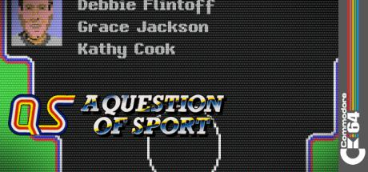

A Question Of Sport
1988
•
C64
•
Elite
Overview
Game Summary
A Question Of Sport on Commodore — screenshots, manual, downloads and video.
Explore
More Details
View the full interactive game page
Browse all games